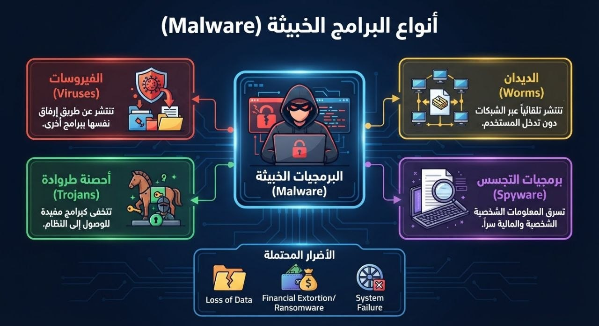
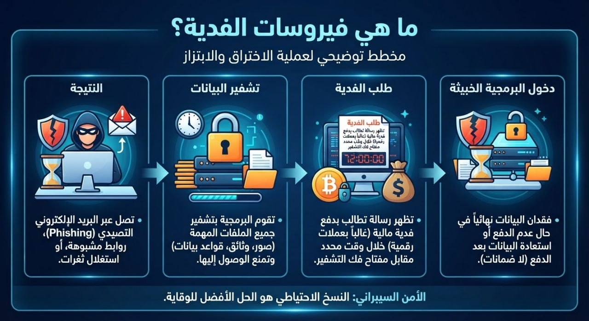
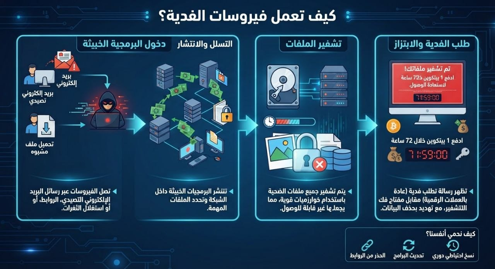
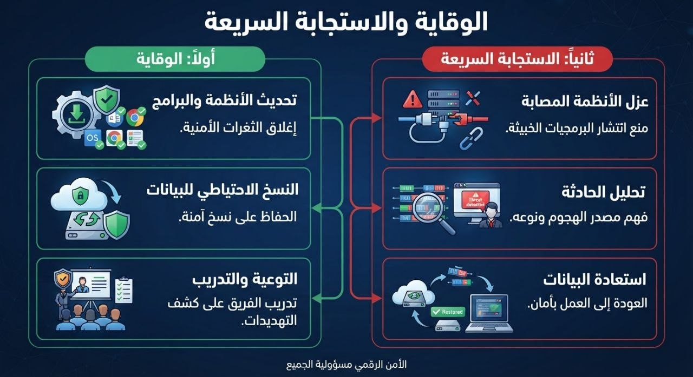

البرمجيات الخبيثة
هي أي برنامج أو شيفرة برمجية تُصمَّم لإلحاق الضرر بنظام حاسوبي أو شبكة أو جهاز، أو لاختراقها وسرقة البيانات أو التجسس عليها دون إذن المستخدم.
أنواع شائعة من البرمجيات الخبيثة
تختلف البرمجيات الخبيثة في طريقة انتشارها وهدفها، ومن أبرز أنواعها:
- الفيروسات (Viruses): ترتبط بملفات أو برامج سليمة وتنتشر عندما يشغّل المستخدم الملف المصاب أو ينقله إلى أجهزة أخرى.
- الديدان (Worm): تنتشر تلقائياً عبر الشبكات والثغرات الأمنية دون الحاجة إلى أن يفتح المستخدم ملفاً مصاباً.
- أحصنة طروادة (Trojans): تتخفى داخل برامج أو ملفات تبدو مفيدة أو شرعية، وعند تشغيلها تفتح باباً خلفياً للمهاجم أو تسرق البيانات.
- برمجيات التجسس (Spyware): تراقب نشاط المستخدم (مثل ضغطات المفاتيح أو تصفح الإنترنت) وتجمع المعلومات سراً.
- فيروسات الفدية (Ransomware): تستهدف الملفات الحساسة وقواعد البيانات والنسخ الاحتياطية غير المعزولة، وتعرقل العمل فوراً عبر التشفير.

فيروسات الفدية (Ransomware)
هي نوع شديد الخطورة من البرمجيات الخبيثة يقوم بتشفير ملفات الضحية أو قفل نظامه، ثم يطالب بدفع مبلغ مالي (فدية) مقابل إتاحة مفتاح فك التشفير أو استعادة الوصول.

كيف تعمل فيروسات الفدية؟
تمر هجمات الفدية عادةً بعدة مراحل متسلسلة:
- الوصول الأولي: يدخل المهاجم عبر رسائل التصيد الاحتيالي، أو روابط ومرفقات خبيثة، أو استغلال ثغرات في أنظمة وخدمات مكشوفة على الشبكة.
- الانتشار وتحديد الأهداف: يتحرك المهاجم داخل النظام أو الشبكة لتحديد الملفات المهمة، ومحاولة تعطيل أدوات الحماية أو النسخ الاحتياطية المتصلة.
- التشفير: تُشفَّر الملفات المستهدفة بخوارزميات تشفير قوية يصعب كسرها دون المفتاح الصحيح، وقد تتغير أسماء الملفات أو امتداداتها.
- المطالبة بالفدية: تظهر رسالة تطلب الدفع (غالباً بالعملات الرقمية) مقابل فك التشفير، وأحياناً يهدد المهاجم بنشر البيانات المسروقة إذا لم تُدفع الفدية.

الوقاية والاستجابة الأساسية
- النسخ الاحتياطي الآمن: الاحتفاظ بنسخة احتياطية حديثة لملفاتك المهمة، ويفضّل أن تكون معزولة (غير متصلة باستمرار بالجهاز أو الشبكة) حتى لا تتأثر بالتشفير.
- تحديث النظام والبرامج: تثبيت التحديثات الأمنية أولاً بأول لسد الثغرات التي تستغلها البرمجيات الخبيثة.
- الحذر من المصادر غير الموثوقة: عدم فتح المرفقات المشبوهة أو تحميل البرامج المكركة من مواقع غير رسمية.
- عند الاشتباه بإصابة: افصل الجهاز عن الشبكة والإنترنت فوراً للحد من الانتشار، ولا تدفع الفدية كخيار أول لأن الدفع لا يضمن استعادة الملفات.
